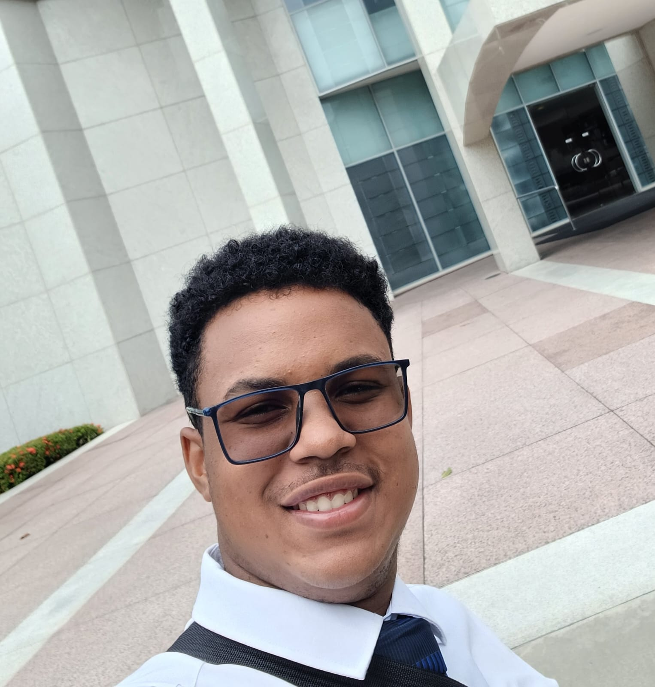

Ola, tudo bem?
Eu sou Victor Figueira
Sou natural de Recife, Pernambuco, e atualmente sou estudante
de Análise e Desenvolvimento de Sistemas na CESAR School,
um centro de referência em tecnologia e inovação no Recife.
Além descobrir meus estudos na CESAR School, estou matriculado
no BYU Pathway Worldwide, uma instituição americana que oferece
ensino a distância. Esse curso me proporciona a oportunidade
de desenvolver minhas habilidades em programação e
aprimorar
meu inglês, uma vez que todo o conteúdo é ministrado no idioma.
Tenho 20 anos e sou extremamente otimista quanto ao meu futuro
profissional na área de tecnologia. Estou sempre em busca de
oportunidades para crescer e aprender, tanto no ambiente
acadêmico
quanto no pessoal. Nos meus momentos de lazer, gosto
muito
de assistir séries e filmes, além de aproveitar a praia,
que é um
dos meus lugares favoritos. Sou apaixonado por
entender como
as coisas funcionam, o que me motiva a explorar
e descobrir mais
sobre o mundo da tecnologia e além.